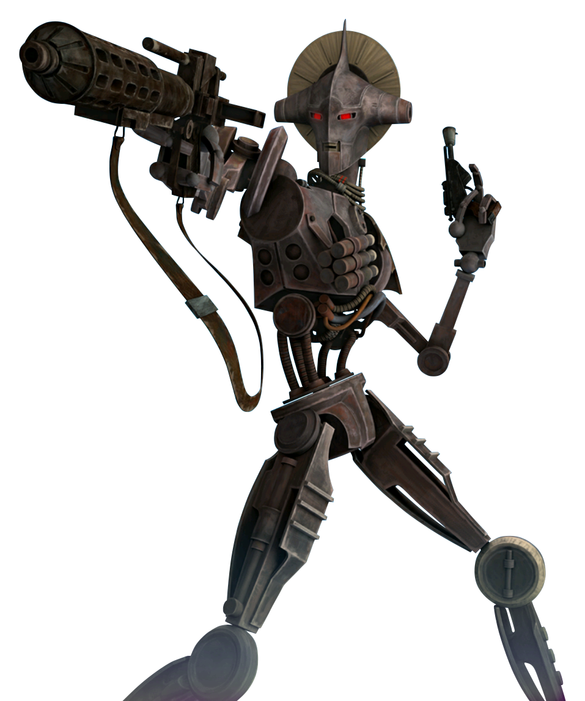

Droid
Special Abilities: Droids do not need to eat, sleep, or breathe, and are unaffected by toxins or poisons. Droids have a cybernetic implant cap of 6 instead of their Brawn rating. In addition, after selecting their career, a Droid Player Character may train one rank in six of the eight career skills (instead of the usual four). After selecting their first specialization, a Droid Player Character may train one rank in three of the four specialization skills (instead of the usual two).
Inorganic: Since droids are inorganic, they do not gain the benefits of recovering with a bacta tank, stimpack, or Medicine skill checks. Droids do recover naturally by resting, as their systems attempt self-repairs. Otherwise, droids need to be tended to with a Mechanics check, using the same difficulties and results of Medicine checks for organic beings. Emergency repair patches can be used to repair damage just like stimpacks are used on organic beings. Due to their resilient metallic construction, droids start the game with one rank in the Enduring talent.
Mechanical Being: Droids cannot become Force sensitive, nor acquire a Force Rating by any means. Droids cannot use Force powers, and also cannot be affected by mind-altering Force powers.
Whereas the Empire generally treats its droids as little more than self-directed tools and disposable assets, the Alliance has come to value the contributions and involvement of droids in their efforts. Droids help fill personnel gaps across the board, especially in noncombat roles. Astrogation, engineering, medicine, and even piloting (when there aren't enough breathing pilots around)—all are tasks droids readily and loyally fulfill as part of the effort to overthrow the Empire
Creativity is not only allowed when a player decides to build a droid PC, it is encouraged. Droids are simply another species choice, albeit one with a wider range of variables for the player to manipulate. Their special abilities directly convey their non-flesh-and-blood nature, and gear choices such as weapons and armor can be defined as being built into the droid's body instead of functioning as separate, stand-alone equipment.
The personality of a droid is a more delicate matter. The very fact that the droid is a Player Character means that it is self-aware and independent-minded (unless the player wants to play a character who is completely subservient to the surrounding biologicals, of course).
Original design and function should always remain a part of who a droid is. It may have capabilities far beyond its initial programming, but it still maintains predilections related to what it was created to do. Power droids can become fully capable engineers, yet they always pay extra attention to the power flows in their areas of responsibility. A protocol droid might well develop the capacity to wield arms and enter combat, but it likely wants to explore nonviolent options first.
Droids manufacturers organize droids in five distinct classes based on their primary functions.
Class One (First-degree): Specializing in physical sciences, mathematics, and medicine, these droids are often highly intelligent intellectuals, but lacking in "common sense."
Class Two (Second-degree): Class Twos work in the engineering and technical fields such as repairs and astrogation. They are often well-liked due to their reasonable intelligence, non-threatening appearances, and quirky personalities.
Class Three (Third-degree): Class Three droids are often humanoid in appearance, as they are intended to work directly with organics. They are programmed for the social and service areas, such as interpretation, teaching, protocol, and diplomatic assistance.
Class Four (Fourth-degree): Class Fours are equipped with weaponry and designed for security, military training and operations, gladiatorial combat, and even assassination.
Class Five (Fifth-degree): Class Fives are simple labor units for a whole host of menial jobs, from sanitation to load-lifting. Many do not have enough cognition to be considered sentient.
While an individual droid PC is likely at least somewhat customized, there are quite a few standard models that make a good starting place to work from.
2-1B Surgical Droid (Genetech/lndustrial Automaton): The 2-1 B Surgical Droid is a highly intelligent and flexible thinker; as one would expect of a droid whose decisions involve life and death. Its rather ugly chassis hides a remarkably complex and flexible behavioral circuitry matrix, and the droids are intelligent and capable in equal measure.
3P0 Protocol Droids (Cybot Galactica): The 3P0 series of protocol droids are some of the most human-like automata ever developed—perfect for their assigned tasks as ambassadors, political aids, translators, and personal attaches. However, their advanced SyntheTech AA-1 verbobrains can sometimes develop neuroses or other "quirks."
IG Assassin Droids (Holowan Mechanicals): Culminating with the feared and deadly IG-88 model, the IC series is infamous as one of the most lethal assassin droids in the galaxy. IG droids rarely meet an opponent they cannot eliminate, and true to their humorless nature, they follow the instructions for a particular bounty to the letter
LE-VO Law Enforcement Droids (Rseikharhl Droid Group): The success of LE-VOs in deterring crime in the Rseikharhl sector has led to their adoption galaxy-wide as appropriate models for police assistance and private security. Their programming requires them to follow Imperial codes to the letter and only use force when absolutely necessary. Though they are hardly ever equipped with lethal weaponry, they know how to target a stun weapon for maximum effect.
LOM Protocol Droid (Industrial Automaton): The LOM series was Industrial Automaton's attempt to upset a market dominated by Cybot Galactica. IA attempted to make a protocol droid very similar to the 3P0 units but with an insectoid head to appeal to niche markets. However, bad PR from at least one unit's career as a jewel thief caused IA to scrap the line. Some of the remaining LOM droids do have a habit of developing interesting and unexpected personalities
R-Series Astromech Droids (Industrial Automaton): The wildly successful R-series ranges from the original and cumbersome Rl to the famous R2 unit and all the way to the soon-to-be-released R6. Aside from the Rl (which is more than two meters tall and works aboard capital ships), all of the R-series astromechs are roughly a meter or so tall, and designed to ride in sockets aboard snubfighters to perform astrogation calculations and allow hyperspace jumps. A wide variety of tools also make them decent repair droids.
In the Star Wars universe, the available types of droids are almost as varied as the types of alien species, though there are some standard models that are well known and fairly ubiquitous. Players can choose to have forms ranging from the bipedal and human-like to utilitarian box-like forms, animal-like forms, or anything else they can imagine.
Droid PC may declare as intrinsic to its construction virtually any piece of equipment an organic would need to carry. The GM has final say on what is or is not be allowed, but most such gear is permissible to treat as inherent to the droid's construction or to add to the droid as an upgrade when the gear is purchased.
In the wider galaxy (aside from wild rumors about "machine planets"), most droids are mere functionaries within societies that completely rely upon them and expect them to obey. Within the Alliance, however, they have come to know a higher level of respect. Though many in the Alliance's structure still hold with the idea of memory wipes and programming for necessary tasks only (especially when droids are acquired from Imperial or questionable sources), more and more leaders and commanders have taken the long view on allowing trusted droids to continue to develop a sense of personal independence and purpose. On more than one occasion, this has proven to be a brilliant strategy, and will likely continue.
As such, many droids have transcended their programming and original purpose to become more than they started as, and find service in the Alliance very satisfactory. Granted, those coming from outside regular channels face a great deal of suspicion, which is often impossible to overcome. Technicians usually scan a droid's memory bank and programming thoroughly to ensure there are no hidden commands betraying the Rebellion in any way.
Most droids are better suited to non-combat roles, serving in support areas to better enable the forces of the Rebellion to fight efficiently and effectively. Many droids of a technical nature serve aboard capital ships, often handling the tasks of dozens of non-droid crew, making personnel shortages less devastating to the Alliance Navy. Astromech droids abound as more and more snubfighters, like the X-wing, are brought into service.
Individual droids with their own motivations can serve in any capacity they desire, though most choose careers and specializations that fit their basic design and functions. The Duty a droid chooses, as well, should suit its chosen path.